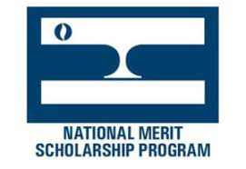
2023 February - National Merit Finalist 2023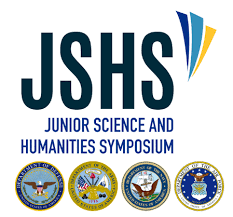
2023 February - Selected Top 15 Oregon for JSHS 2023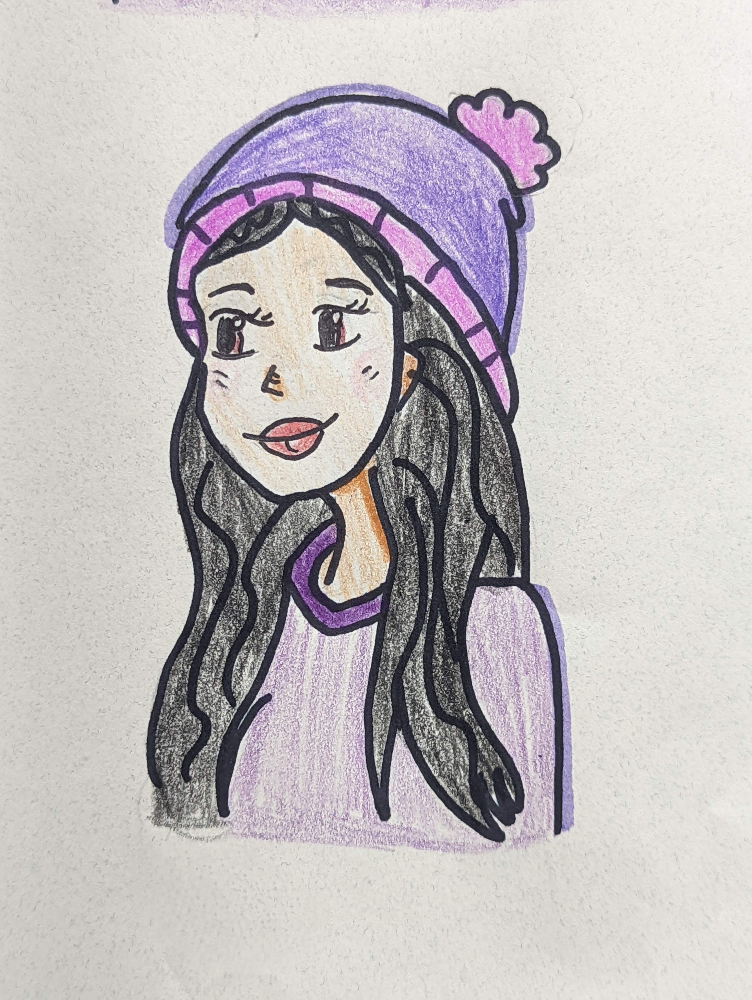
2022 December - Published fifth book under pen-name Jana A. Bee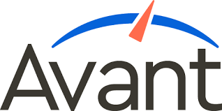
2022 November - Oregon Seal of Bilteracy in Spanish (Avant 4S STAMP exam)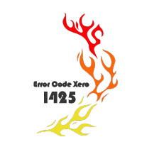
2022 June - Elected Technical Integration Lead - 1425 Error Code Xero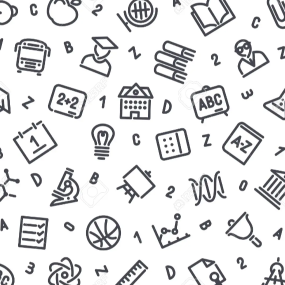
2022 May - Officially Opened "Start Tutoring" Organization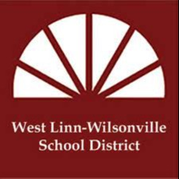
2022 May - West Linn-Wilsonville Students Compete on Science's Biggest Stage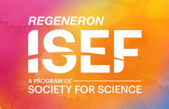
2022 May - Full Awards: Regeneron International Science and Engineering Fair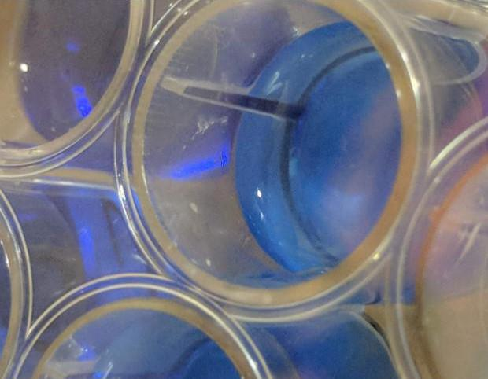
2022 May - ISEF Finalist EBED017 "Invisible Blues!" [3rd in Category Embedded Systems] && 2022 ISEF Finalist Directory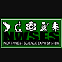
2022 April - NWSE Awards (1st in Electrical & Mechanical Engineering; Special Awards: Sustainable Development from Ricoh Foundation, OSU General Scholarship)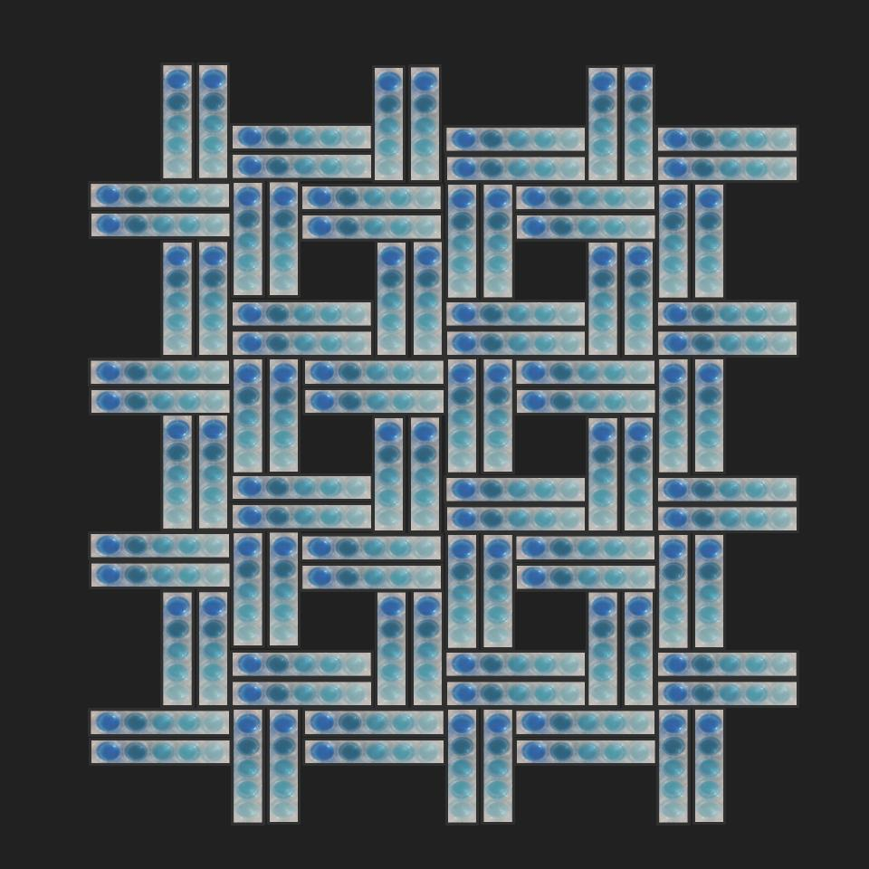
2021 May - ISEF Finalist CHEM034 "Detecting Nitrogen Level in Sample (Electrolysis)" && 2021 ISEF Finalist Directory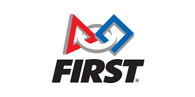
2021 April - Semifinalist in PNW Dean's List - District Chairman's and Dean's List Awards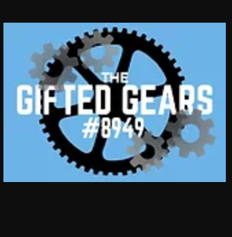
2019 April - Competed at World's with FTC Team 8949 The Gifted Gears [2nd year] 2015 May -Started & Joined FLL Team 17347 The Code Dominators
2015 May -Started & Joined FLL Team 17347 The Code Dominators